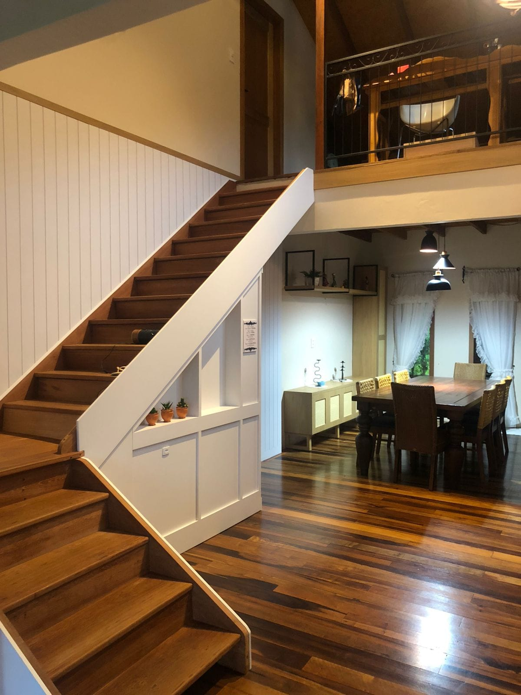

Ambientes personalizados
Fabricamos móveis que mostram a identidade e bom gosto de cada cliente, buscamos transparecer preferências e estilo de cada cliente em cada trabalho entregue. Sempre projetando espaços práticos e funcionais para nossos clientes. E entregando sonhos.
Home's e hall de entrada
Espaço aberto clean
Hall com entrada para sala interligado
com a cozinha oferecendo sensação de
ambiente amplo e clean.

Hall integrado
Sala e cozinha integrados com escada
para 2º piso. Bem iluminado e aconchegante.

Hall de 2º piso
Corredor com escada em ambiente na cor
madeira, passa uma sensação de leveza
minimalista.
Hall clássico
Sala de jantar de madeira maçiça e escada com
armário embutido, traz a sensação de clássico
sem perder o requinte do moderno.

Hall moderno
Hall com entrada para sala, juntando tudo
em curto espaço para quem gosta de tudo
próximo à mão.
Dormitórios
Closet embutido
Closet bem emoldurado a parede parecendo
fazer parte do ambiente.
Armário camuflado
Dormitório com armário que se camufla trazendo
sensação minimalista ao ambiente.

Quarto completo
Cama de madeira de qualidade e armários
altos para aproveitamento do espaço sem
atrapalhar na locomoção.
Cama embutida na parede
Cama recolhível que se camufla com a parede
e armários permitindo maior aproveitamento
dos espaços.
Quarto totalmente planejado
Quarto totalmente pensando para passar a
sensação de unidade ao ambiente, e ainda
traz o aconchego da cor madeira.
| VEM PARA A MÓVEIS NESI ! |
----------------------------------
-> Clique aqui para obter o ENCEREÇO da nossa marcenaria! <-
Moveis Nesi - Pare de SONHAR e comece a REALIZAR!
-> Clique aqui para acessar nosso INSTAGRAM! <-